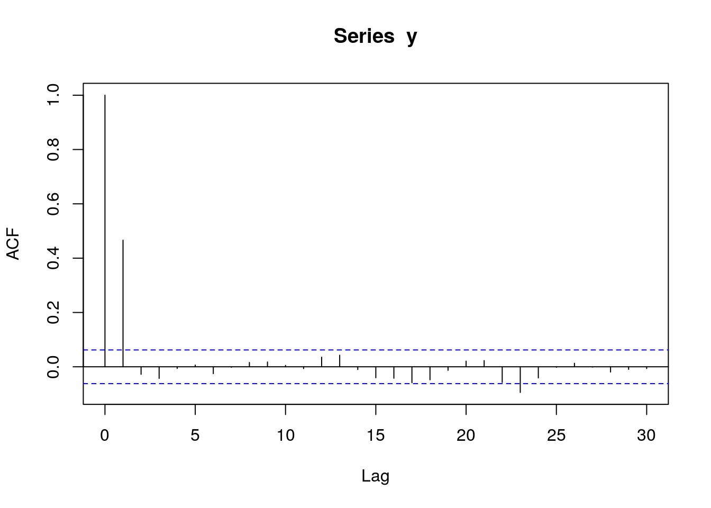
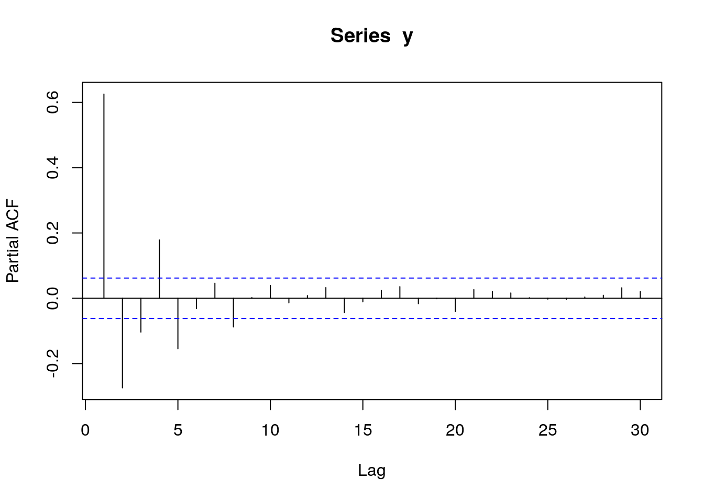
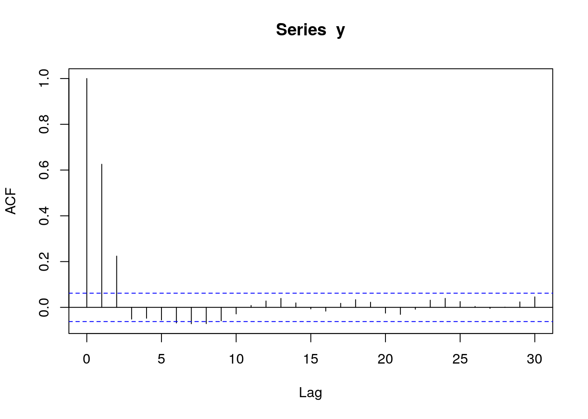
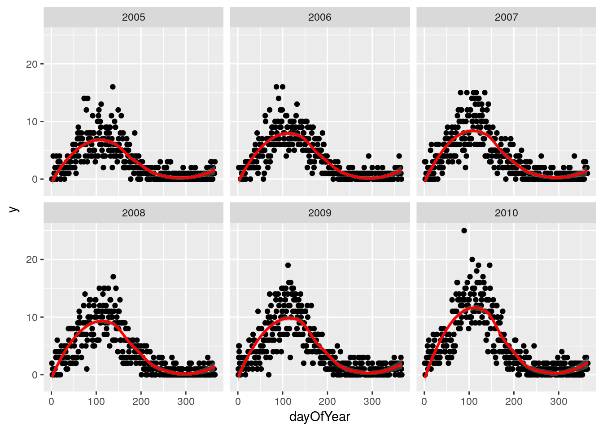

Chapter 3 Panel data: One area without autocorrelation
library(data.table)
library(ggplot2)
set.seed(4)
AMPLITUDE <- 1.5
SEASONAL_HORIZONTAL_SHIFT <- 20
d <- data.table(date=seq.Date(
from=as.Date("2000-01-01"),
to=as.Date("2018-12-31"),
by=1))
d[,year:=as.numeric(format.Date(date,"%G"))]
d[,week:=as.numeric(format.Date(date,"%V"))]
d[,month:=as.numeric(format.Date(date,"%m"))]
d[,yearMinus2000:=year-2000]
d[,dayOfYear:=as.numeric(format.Date(date,"%j"))]
d[,seasonalEffect:=sin(2*pi*(dayOfYear-SEASONAL_HORIZONTAL_SHIFT)/365)]
d[,mu := exp(0.1 + yearMinus2000*0.1 + seasonalEffect*AMPLITUDE)]
d[,y:=rpois(.N,mu)]Showing the true data
q <- ggplot(d,aes(x=date))
q <- q + geom_point(mapping=aes(y=y))
q <- q + geom_line(mapping=aes(y=mu),colour="red")
q
Investigating the data
We take a quick look, but don’t see much
q <- ggplot(d,aes(x=date,y=y))
q <- q + geom_point()
q <- q + stat_smooth(colour="red")
q## `geom_smooth()` using method = 'gam'
We then drill down into a few years, and see a clear seasonal trend
q <- ggplot(d[year %in% c(2005:2010)],aes(x=dayOfYear,y=y))
q <- q + facet_wrap(~year)
q <- q + geom_point()
q <- q + stat_smooth(colour="red")
q## `geom_smooth()` using method = 'loess'
The Lomb-Scargle Periodogram shows a clear seasonality with a period of 365 days
lomb::lsp(d$y,from=100,to=500,ofac=1,type="period")
We then generate two new variables cos365 and sin365 and perform a simple poisson regression:
d[,cos365:=cos(dayOfYear*2*pi/365)]
d[,sin365:=sin(dayOfYear*2*pi/365)]
fit0 <- glm(y~yearMinus2000, data=d, family=poisson())
fit1 <- glm(y~yearMinus2000+sin365 + cos365, data=d, family=poisson())
print(lmtest::lrtest(fit0, fit1))## Likelihood ratio test
##
## Model 1: y ~ yearMinus2000
## Model 2: y ~ yearMinus2000 + sin365 + cos365
## #Df LogLik Df Chisq Pr(>Chisq)
## 1 2 -27287
## 2 4 -12805 2 28963 < 2.2e-16 ***
## ---
## Signif. codes: 0 '***' 0.001 '**' 0.01 '*' 0.05 '.' 0.1 ' ' 1print(summary(fit1))##
## Call:
## glm(formula = y ~ yearMinus2000 + sin365 + cos365, family = poisson(),
## data = d)
##
## Deviance Residuals:
## Min 1Q Median 3Q Max
## -3.7499 -0.9167 -0.1370 0.5955 3.2193
##
## Coefficients:
## Estimate Std. Error z value Pr(>|z|)
## (Intercept) 0.086654 0.014940 5.80 6.62e-09 ***
## yearMinus2000 0.100461 0.001049 95.75 < 2e-16 ***
## sin365 1.428417 0.010434 136.90 < 2e-16 ***
## cos365 -0.512912 0.008666 -59.19 < 2e-16 ***
## ---
## Signif. codes: 0 '***' 0.001 '**' 0.01 '*' 0.05 '.' 0.1 ' ' 1
##
## (Dispersion parameter for poisson family taken to be 1)
##
## Null deviance: 46221.4 on 6939 degrees of freedom
## Residual deviance: 7259.2 on 6936 degrees of freedom
## AIC: 25619
##
## Number of Fisher Scoring iterations: 5We see a clear significant seasonal effect. We can then use trigonometry to back-calculate the cos365 and sin365 variables to amplitude and location of peak/troughs:
b1 <- 1.428417 # sin coefficient
b2 <- -0.512912 # cos coefficient
amplitude <- sqrt(b1^2 + b2^2)
p <- atan(b1/b2) * 365/2/pi
if (p > 0) {
peak <- p
trough <- p + 365/2
} else {
peak <- p + 365/2
trough <- p + 365
}
if (b1 < 0) {
g <- peak
peak <- trough
trough <- g
}
print(sprintf("amplitude is estimated as %s, peak is estimated as %s, trough is estimated as %s",round(amplitude,2),round(peak),round(trough)))## [1] "amplitude is estimated as 1.52, peak is estimated as 111, trough is estimated as 294"print(sprintf("true values are: amplitude: %s, peak: %s, trough: %s",round(AMPLITUDE,2),round(365/4+SEASONAL_HORIZONTAL_SHIFT),round(3*365/4+SEASONAL_HORIZONTAL_SHIFT)))## [1] "true values are: amplitude: 1.5, peak: 111, trough: 294"We now investigate our residuals to determine if we have a good fit:
d[,residuals:=residuals(fit1, type = "response")]
d[,predicted:=predict(fit1, type = "response")]
q <- ggplot(d,aes(x=predicted,y=residuals))
q <- q + geom_point()
q <- q + stat_smooth(colour="red")
q## `geom_smooth()` using method = 'gam'
# this is for AR
pacf(d$residuals)# this is for MA
acf(d$residuals)
We see a clear significant seasonal effect. We can then use trigonometry to back-calculate the cos365 and sin365 variables to amplitude and location of peak/troughs:
b1 <- 0.1934 # sin coefficient
b2 <- 0.1018 # cos coefficient
amplitude <- sqrt(b1^2 + b2^2)
p <- atan(b1/b2) * 365/2/pi
if (p > 0) {
peak <- p
trough <- p + 365/2
} else {
peak <- p + 365/2
trough <- p + 365
}
if (b1 < 0) {
g <- peak
peak <- trough
trough <- g
}
print(sprintf("amplitude is %s, peak is at %s, trough is at %s",round(amplitude,2),round(peak),round(trough)))## [1] "amplitude is 0.22, peak is at 63, trough is at 246"